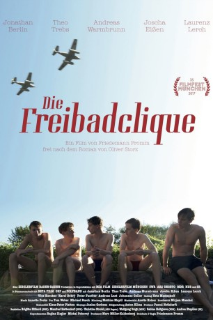

#10579 Die Freibadclique
 
 IMDB-Wertung: 5.6 / 10
IMDB-Wertung: 5.6 / 10  Metascore: 0
Metascore: 0 
Sommer 1944, Schwäbisch Hall. Entgegen der Kriegspropaganda und dem verordneten Heldentum träumen die 16-jährigen Jungs der Freibadclique von Swingmusik, Sex und Freiheit – und von Lore, der Luftwaffenhelferin vom Fliegerhorst, die in ihrem roten Badeanzug alle Blicke auf sich zieht. Gleichzeitig ahnen Onkel, Knuffke, Bubu, Zungenkuss und Hosenmacher, dass sie dem Schrecken der Front nicht entkommen werden. "Bleibt übrig", ruft Lore ihnen nach. Doch Zungenkuss erwischt es als ersten und auch Hosenmacher wird den Krieg nicht überleben. Während Knuffke als in den Vogesen verschollen gilt, wagen Onkel und Bubu die abenteuerliche Flucht bei einem Volkssturmgefecht und es gelingt ihnen, nicht als Deserteure erwischt zu werden. (ARD)
Jahr: 2017
Dauer: 103 Minuten
FSK: 12
Land: Deutschland Studio: ARDTonspuren:
Untertitel:
Auflösung: SD (720x404) Größe: 806 MB
Genre: Drama, Krieg
Regisseur: Friedemann Fromm
Drehbuch: Friedemann Fromm, Oliver Storz
Soundtrack: Annette Focks
Darsteller:
 Andreas Lust als Hosenmacher
Andreas Lust als Hosenmacher Karel Dobrý als McKee
Karel Dobrý als McKee- Vica Kerekes als Gunda
- Jonathan Berlin als Onkel
- Theo Trebs als Knuffke
- Andreas Warmbrunn als Bubu
- Joscha Eißen als Zungenkuß
- Christoph Hufenbecher als Feldgendarm der deutschen Wehrmacht
- Laurenz Lerch als Hosenmacher
- Lili Epply als Lore
- Peter Faerber als Stricker
- Jürgen Hartmann als Onkels Vater
- Andreas Klaue als Dr. Ströbele
- Robert Kuchenbuch als Konrad
- Manja Kuhl als Britta
- Anna Gesa-Raija Lappe als Ulla
- Miroslav Lhotka als Prisoner
- Thomas Balou Martin als Gauleiter
Datei: X:\2017(A-F)\Freibadclique, Die (2017, FSK12, 720x404).mkv seit 21.01.2019
Festplatte: HD 2017(A-Z)-2018(A-F)
 Es gibt insgesamt 152 Filme in der Gruppe '2017(A-F)'
Es gibt insgesamt 152 Filme in der Gruppe '2017(A-F)'